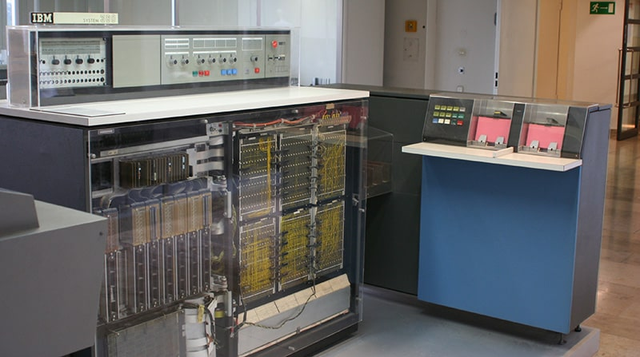

Период с конца 60-х и до конца 70-х история создания компьютера относит к эпохе интегральных схем. Их появление позволило сделать серьёзный прыжок в развитии вычислительной техники – весь этот период именуют третьим поколением компьютеров. Возможность интегрировать в одну микросхему несколько полупроводниковых приборов позволило тогдашнему компьютеру значительно приблизиться к тому ПК, который мы знаем сегодня.
Лидер по производству компьютеров IBM к началу 70-х выпустил более 20 различных моделей ЭВМ. В одной из последних разработок этого времени впервые появляется кэш-память. Над улучшением разработок многие страны объединяют усилия и подписывают соглашение о сотрудничестве в области вычислительной техники.
